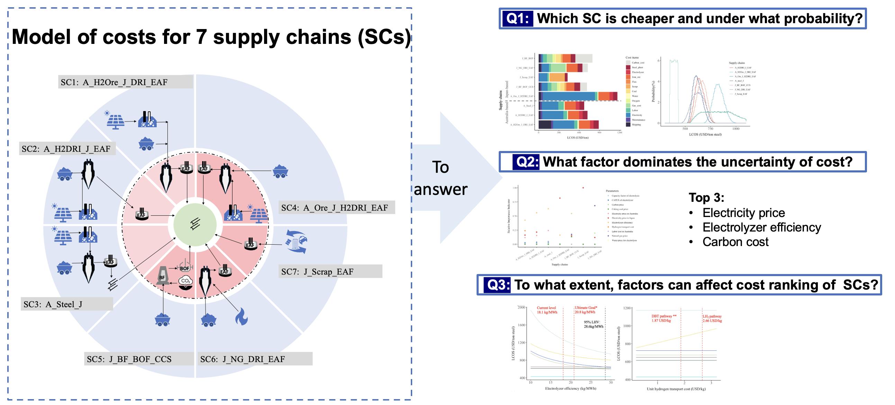
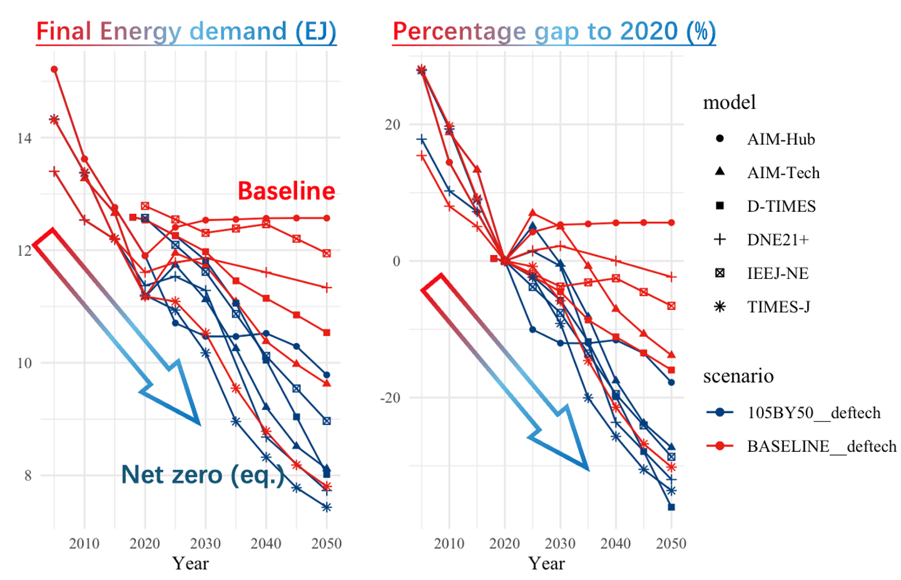
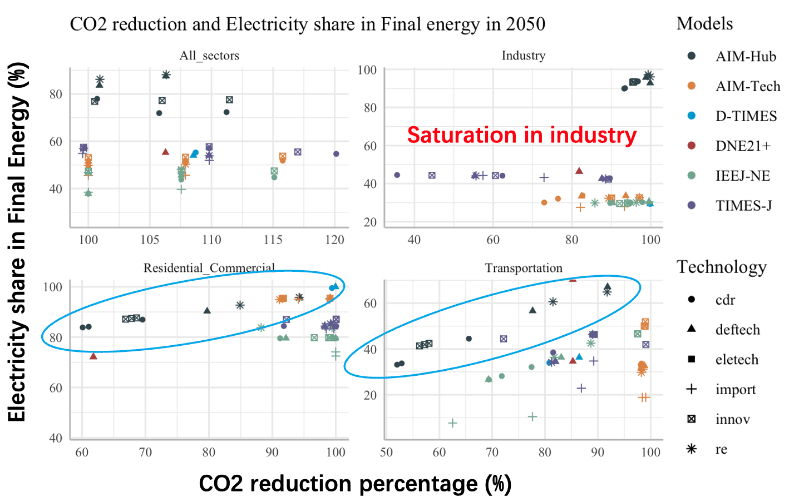
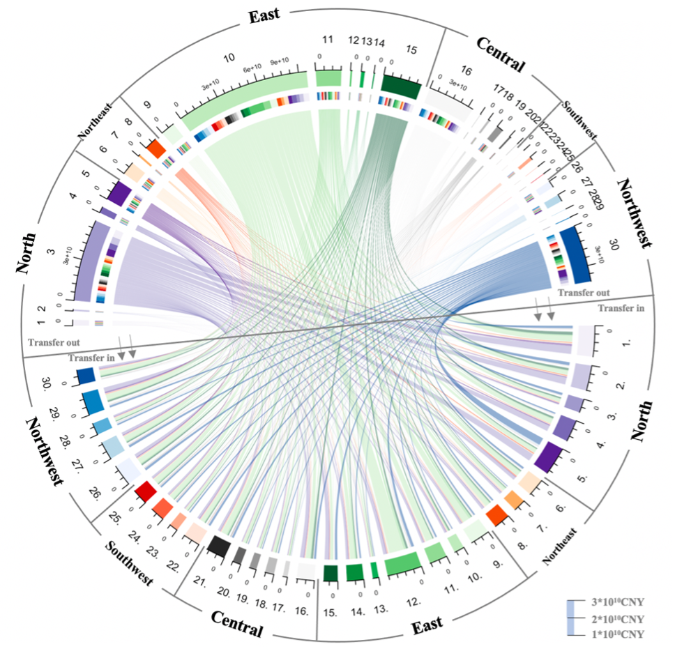

Tao CAO (曹涛)Ph.D. Candidate
The University of Tokyo
|
|

Biography
Oh hi, I am Tao, a Ph.D. candidate at UTokyo working with Prof. SUGIYAMA Masahiro.

My research interests includes the energy transition, the decarbonization of industry, and demand-side emission reduction modeling.
Look forward to deep talk and collaboration. ✌🏻
Experience
WORKING EXPERIENCE
- Engineer, 2020-2022
POWERCHINA Huadong Engineering Corporation Limited, Hangzhou, China - Guest researcher, 2024.5-2024.12
International Institute for Applied Systems Analysis, Austria
Worked with Alessio MASTRUCCI
EDUCATIONS
- Ph.D. candidate, Multidisciplinary Sciences, 2022-present
Graduate School of Arts & Sciences, The University of Tokyo, Tokyo, Japan
Supervised by Prof. SUGIYAMA Masahiro - M.Eng., Environmental Science, 2017-2020
School of Environment, Beijing Normal University, Beijing, China - B.Ag., Soil and Water Conservation and Desertification Combating, 2013-2017
School of Soil and Water Conservation, Beijing Forestry University, Beijing, China
HONORS AND AWARDS
- SPRING GX project (JST, Japan), 2022
- First-class scholarship for academic excellence (BNU, China), 2019
- The National Scholarship (MOE, China), 2014
INVITED TALKS
- Green steel seminar at the Climate Center, KTH, Stockholms, Sweden, 2024
- Australia-Japan hydrogen steel workshop, ANU, Canberra, Australia, 2024
Publications
- Tao Cao†, Sugiyama, Masahiro, Ju, Yiyi. Prospects of regional supply chain relocation for iron & steel industry decarbonization: A case study of Japan and Australia. Resources, Conservation and Recycling. 2024.
- Tao Cao†, Sugiyama Masahiro, et al. The pace of hydrogen and electricity adoption in Japan’s demand-side decarbonization, some insights based on JMIP2. Energy and Climate Change. 2024. (In submission)
- Masahiro Sugiyama, Charlie Wilson, Dominik Wiedenhofer, Benigna Boza-Kiss, Tao Cao, Joyee S. Chatterjee, Souran Chatterjee, Takuya Hara, Ayami Hayashi, Yiyi Ju, Volker Krey, María Fernanda Godoy León, Luis Martinez, Eric Masanet, Alessio Mastrucci, Jihoon Min, Leila Niamir, Setu Pelz, Joyashree Roy, Yamina Saheb, Roberto Schaeffer, Diana Ürge-Vorsatz, Bas van Ruijven, Yoshiyuki Shimoda, Elena Verdolini, Frauke Wiese, Yohei Yamaguchi, Carina Zell-Ziegler, Caroline Zimm. High with low: Harnessing the power of demand-side solutions for high wellbeing with low energy and material demand. Joule. 2024.
- Dominik Wiedenhofer, Jan Streeck, Frauke Wiese, Elena Verdolini, Alessio Mastrucci, Yiyi Ju, Benigna Boza-Kiss, Jihoon Min, Jonathan Norman, Hanspeter Wieland, Nuno Bento, María Fernanda Godoy León, Leticia Magalar, Andreas Mayer, Simone Gingrich, Ayami Hayashi, Joni Jupesta, Gamze Ünlü, Leila Niamir, Tao Cao, Marianne Zanon-Zotin, Barbara Plank, Johan Vélez-Henao, Eric Masanet, Volker Krey, Keigo Akimoto, Arnulf Grubler, Bas van Ruijven, Stefan Pauliuk. Industry Transformations for High Service Provisioning with Lower Energy and Material Demand: A Review of Models and Scenarios. Annual Review of Environment and Resources. 2024.
- Yiyi Ju†, Nur Firdaus, Tao Cao. Industry’s role in Japan’s energy transition: soft-linking GCAM and National IO table with extended electricity supply sectors. Economic Systems Research. 2023.
- Saige Wang, Tao Cao, Bin Chen†. Identifying critical sectors and supply chain paths for blue and grey virtual water trade in China based on structural path analysis. Applied Energy. 2021.
- Tao Cao, Saige Wang, Bin Chen*. Water shortage risk transferred through interprovincial trade in Northeast China. Energy Procedia. 2019, 158:3865-3871.
- Tao Cao, Saige Wang, Bin Chen†. Virtual water analysis for the Jing-Jin-Ji region based on multiregional input-output model. Acta Ecologica Sinica. 2018. (in Chinese)
- Tao Cao, Saige Wang, Bin Chen*. The energy-water nexus in interregional economic trade from both consumption and production perspectives. Energy Procedia. 2018.
- Tao Cao, Saige Wang, Bin Chen*. Priority in energy-water nexus based on input-output analysis: A case study of China. ICEEE 2018. Nov 21-25, 2018, Melbourne, Australia.
- Saige Wang, Tao Cao, Bin Chen†. Urban energy-water nexus based on modified input-output analysis. Applied Energy. 2017.
- Saige Wang, Tao Cao, Bin Chen. Water–energy nexus in China's electric power system. Energy Procedia. 2017.
Selected Graphs
|  |  |
|  |  |
© Tao CAO